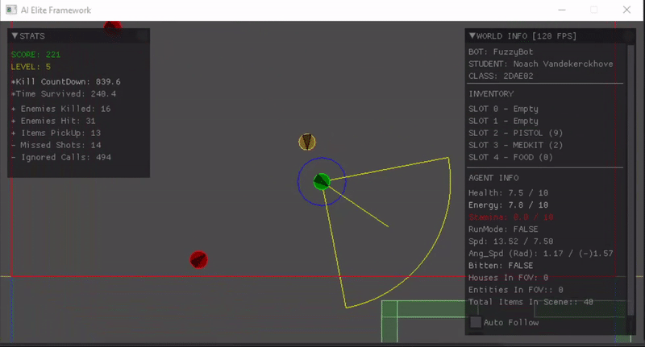

Survival AI
With Grid Based Search
Intro
This project was the exam for the gameplay programming course. During this course we learned a lot about AI with topics such as steering behaviours, flow fields, Space partitioning and pathfinding. The framework for this project was provide to us by the school.
The AI
For this AI I started with a finite state machine with some of the main states being : Exploration, Handling enemy, Seek item, Move into house, Move out of house, Escape purge zone. I'll break down some of the more interesting states.
For the The Exploration state i decided to go Grid based. First off i get the size of the level and make the grid the same size. For this project i subdived the grid into a 4x4 but this could eality be changed.
Then in each cell i set 2 checkpoints(Bottom left and Top right). So the AI when in a cell it will wander to the nearest checkpoint and then to the other while exploring anything in it's sight. If it reached noth checkpoints
it will mark that cell as Explored. Them it will wander to the nearest unexplored cell and repeat the process. The cells that have been marked as explored will be reset after a set amount of time.

Here you can see the AI wandering to the marked point in the Cell.

Here you can see the AI exploring a house.
The Handling enemy state actually constist of 3 smaller states : Evade enemy, Avoid enemy and shoot enemy. It will trigger the Evade behavior when it's just wandering and doesn't have a gun. In this behavior he will turn away from the enemy. The strength of this turn is based on the direction from the player. The Avoid behavior will instead be triggered when he doesn't have a gun but unlike the avoid the AI does have a target that it's currently going towards. It will avoid the enemy while still going towards his intial goal. The closer the enemy gets the stronger it will avoid. And laslty there is the Shooting behavior. This behavior will take priority over the Evade and Avoid when the AI has a gun. It will calculate the smallest angle between himself and the closest enemy and then turn to shoot it. When the AI is hit from behind he will also call the behavior and immediatly turn around.

Here you can see the AI evading an enemy while goint to the previously seen house.
Here you can see the AI handling enemies.
Most of the other states are simple blended steering behaviors with some additional logic.
The inventory management is also handled by the AI. There are 4 types of items : Food, Medkits, Weapons and garbage. It will immediatly dispose of picked up garbage.
For the food and Medkits the AI will decide to use one if one of their respective meters are running low. it will use one faster if they have a lot of the same item.
Example Code:
void Grid::CreateGrid(int size)
{
float cellWidth = m_WorldInfo.Dimensions.x / size;
float cellHeight = m_WorldInfo.Dimensions.y / size;
float startX = m_WorldInfo.Center.x - ((size / 2) * cellWidth) + (cellWidth / 2);
float startY = m_WorldInfo.Center.y + ((size / 2) * cellHeight) - (cellHeight / 2);
Vector2 startCenter{ startX,startY };
int id{ 0 };
float offset{ 20.0f };
for (int i = 0; i < size; i++)
{
for (int j = 0; j < size; j++)
{
id++;
Cell* pCell = new Cell(id, startCenter, cellWidth, cellHeight);
pCell->CreateCheckpoints(offset);
m_Cells.push_back(pCell);
startCenter.x += cellWidth;
}
startCenter.x = startX;
startCenter.y -= cellHeight;
}
}
void Plugin::AvoidEnemy(bool& enemyFound, IExamInterface* interface, Vector2& avoid, SteeringPlugin_Output& steering, Vector2& seek)
{
auto agentInfo = interface->Agent_GetInfo();
steering.RunMode = true;
//Ratio
float ratio = 1-(Distance(avoid, agentInfo.Position) / agentInfo.FOV_Range);
std::cout << ratio <<"\n";
ratio = std::fmin(ratio, 0.5f);
//Desired Velocity avoid
Vector2 avoidDir = (agentInfo.Position - avoid);
avoidDir = RescaleVector(avoidDir, ratio);
//Desired Velocity seek
const Vector2 temp = interface->NavMesh_GetClosestPathPoint(seek);
Vector2 seekDir = temp - agentInfo.Position;
seekDir = RescaleVector(seekDir, 1-ratio);
steering.LinearVelocity = seekDir + avoidDir;
steering.LinearVelocity = RescaleVector(steering.LinearVelocity, agentInfo.MaxLinearSpeed);
}auto agentInfo = interface->Agent_GetInfo();
float angle{};
const Vector2 lookAt{ GetLookAtVector(agentInfo.Orientation) };
steering.LinearVelocity = { 0,0 };
steering.AutoOrientate = false;
Vector2 shortestDistance{ float(INFINITE),float(INFINITE)};
for (size_t i = 0; i < enemies.size(); i++)
{
Vector2 dir{ enemies[i] - agentInfo.Position };
if (dir.Magnitude() < shortestDistance.Magnitude())
shortestDistance = dir;
}
//Determine sign
const Vector2 temp{ target - agentInfo.Position };
const float cross = Cross(lookAt, temp);4
if (cross < 0.f)steering.AngularVelocity = -agentInfo.MaxAngularSpeed;
else steering.AngularVelocity = agentInfo.MaxAngularSpeed;.png)
.png)